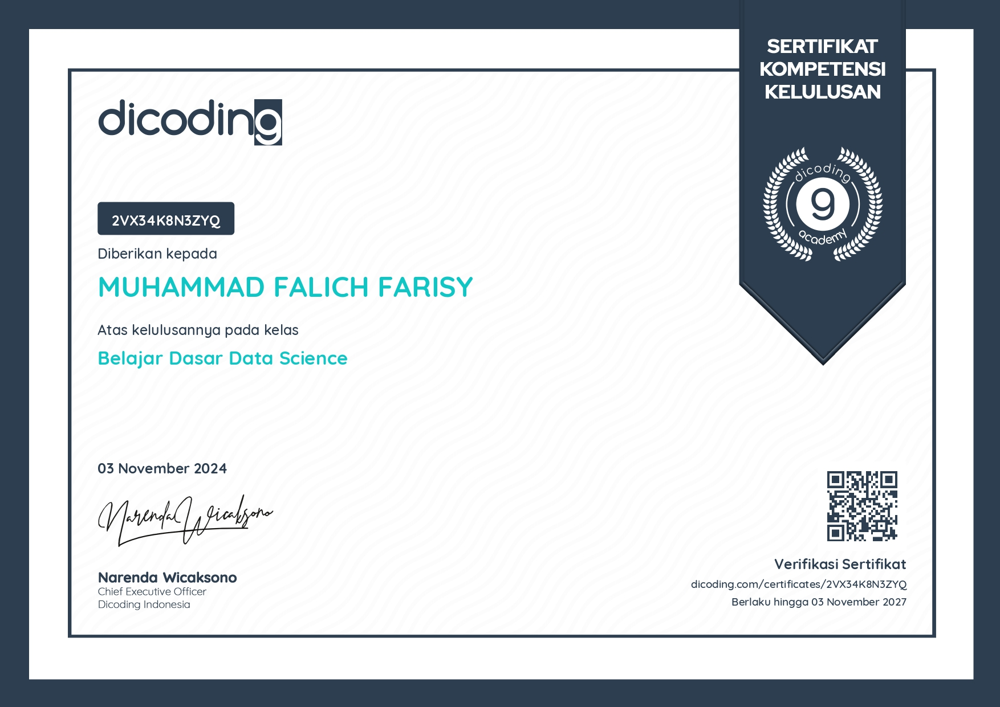
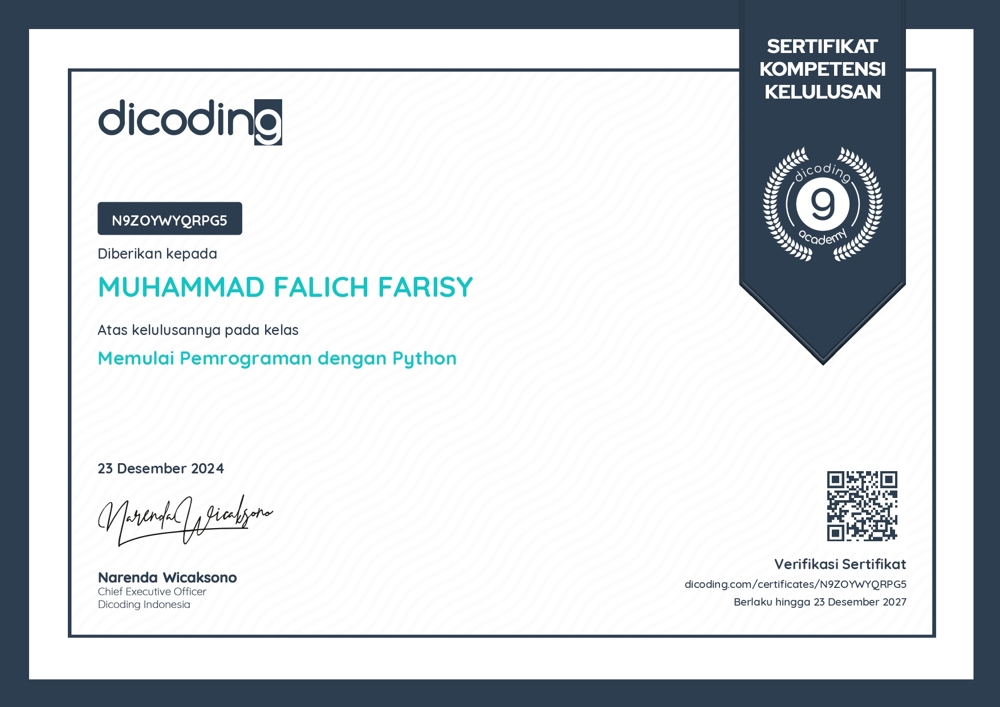

Muh. Falich Farisy
Education
Sebagai lulusan SMAN 2 Ponorogo jurusan MIPA, saya memiliki fondasi yang kuat dalam bidang ilmu pengetahuan alam, termasuk matematika, fisika, kimia, dan biologi. Kurikulum yang saya jalani mendorong kemampuan berpikir analitis, pemecahan masalah, dan penguasaan konsep ilmiah yang relevan dengan perkembangan teknologi dan sains modern.
-
Saya mengikuti beberapa organisasi dan event yang ada di sekolah seperti:
- Olimpiade Sains Nasional Tingkat Kabupaten (OSN-K) bidang Informatika tahun 2023
- Ketua Ekstrakurikuler Pencinta Alam (PALA) 2023-2024
- Panitia Pramuka Tamu Ambala (PTA) Divisi Kegiatan tahun 2023
- Panitia Smada Scout Competition (SSC) Divisi Humas tahun 2022
- Peserta Informatics Olimpiad Universitas Jember tahun 2023
2021-2024
Sebagai mahasiswa Politeknik Negeri Madiun jurusan Teknologi Informasi, saya memiliki pemahaman yang mendalam dalam pengembangan teknologi, baik perangkat lunak maupun perangkat keras. Kurikulum yang berbasis praktik membuat saya terampil dalam memecahkan masalah teknis serta mampu mengimplementasikan solusi berbasis teknologi secara efektif.
2024-Present
Certificate
Sertifikat Data Scientist dari Dicoding merupakan pengakuan resmi atas keberhasilan saya dalam menyelesaikan serangkaian pelatihan intensif di bidang data science. Pelatihan ini dirancang untuk membekali saya dengan keterampilan teknis dan analitis yang diperlukan untuk mengolah, menganalisis, dan menginterpretasikan data guna menghasilkan solusi berbasis data yang relevan dan inovatif.
4 November 2024
Kelas ini ditujukan untuk individu yang ingin melangkah menjadi seorang data analyst atau data scientist dengan mempelajari bahasa Structured Query Language (SQL).

7 November 2024
Kelas ditujukan bagi pemula yang ingin belajar dasar pemrograman Python dengan mengacu pada standar industri.
